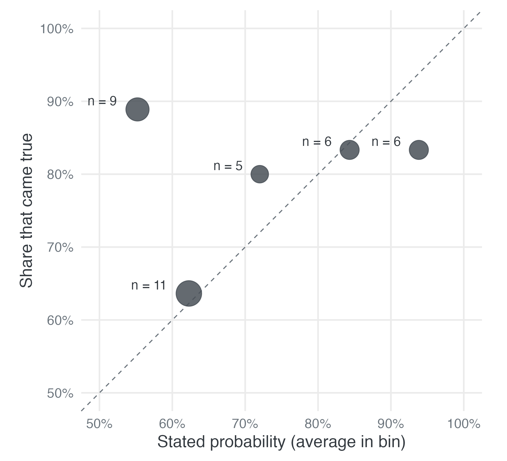

Predictions
On this page, I attempt to “pre-register” predictions by committing to making them publicly here. I assign each prediction a confidence level and a resolution date.1 As they resolve, I’ll come back and turn this into a scorecard! I’m committing to using this as an exercise to highlight my failures as well as my successes, and as part of this public exercise you can verify things via the page’s change history.
Scorecard
| Resolved | Correct | Wrong | Brier score | |
|---|---|---|---|---|
| All predictions | 37 | 29 | 8 | 0.188 |
| Quick take | 11 | 10 | 1 | 0.131 |
| Considered | 23 | 17 | 6 | 0.207 |
| Deep dive | 3 | 2 | 1 | 0.252 |
The Brier Score is a measure of mean squared error for predictions, where 1 is perfect inaccuracy and 0 is perfect accuracy. A perpetual fence-sitter who assigns a probability of 50% every time would have a Brier score of 0.25. Lower is better.
| Stated probability | Resolved | Average stated | Share that came true |
|---|---|---|---|
| 50–59% | 9 | 55% | 89% |
| 60–69% | 11 | 62% | 64% |
| 70–79% | 5 | 72% | 80% |
| 80–89% | 6 | 84% | 83% |
| 90–99% | 6 | 94% | 83% |
All predictions
Click a column header to sort by that field. I have a full predictions table that includes what criteria are used for resolving predictions, as well as some short notes for/against each prediction. These are both my assessment of the general probabilities, and then my personal confidence in my own analysis, which I call effort. This should serve as a pseudo-weight on how much I would actually stand behind a call or be open to updating. A quick take is something I’m making on vibes or a gut check, considered generally means some amount of rough BOTECs without modeling, and deep dives are things I base on original analysis or modeling.
Footnotes
Sometimes may be an approximate date.↩︎